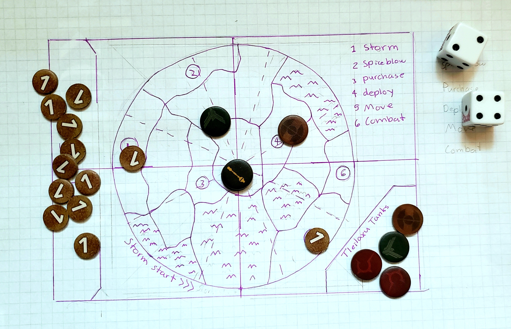
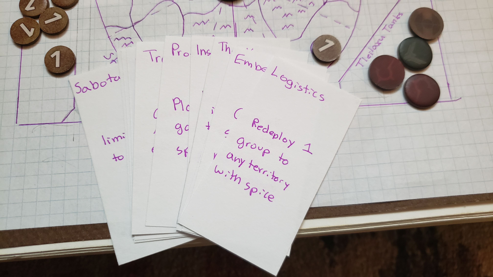
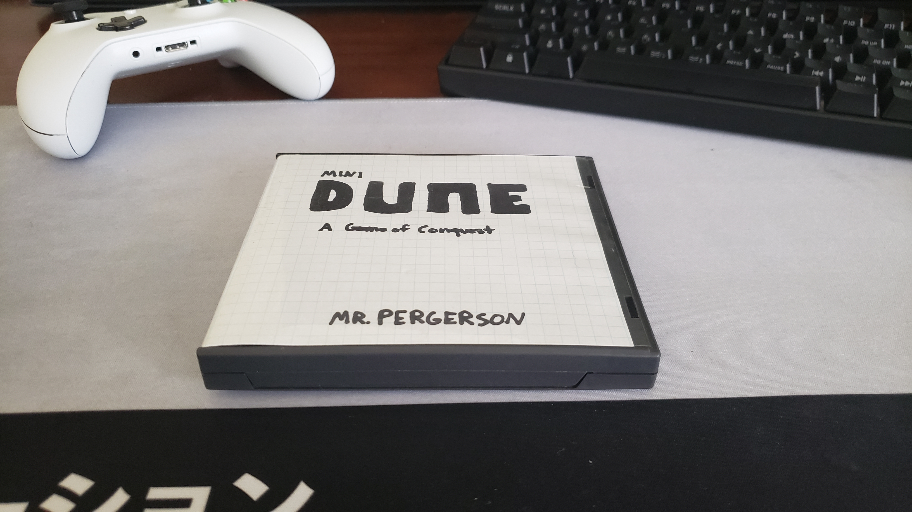
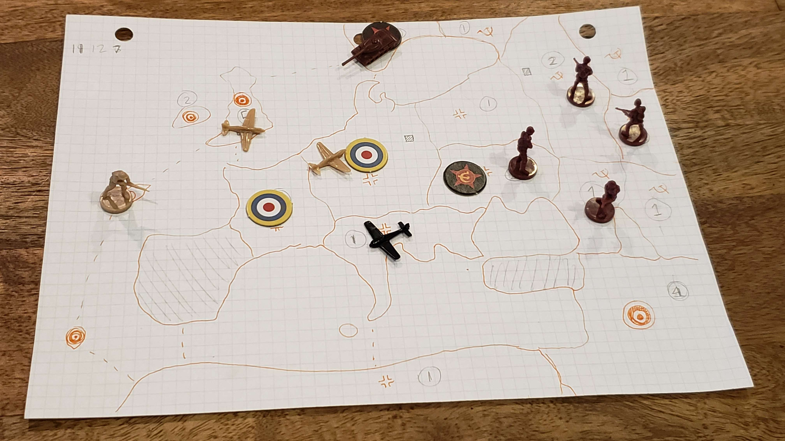
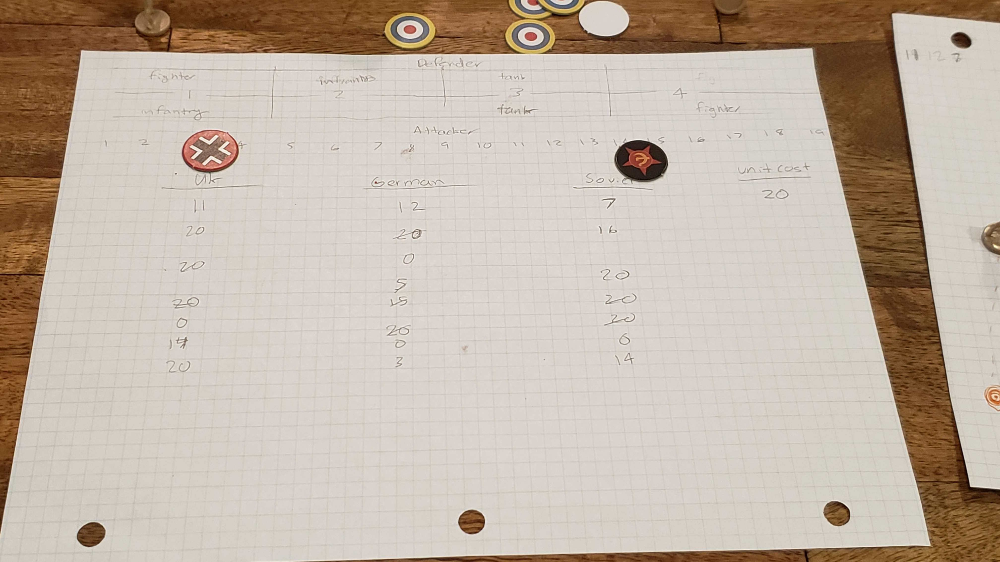
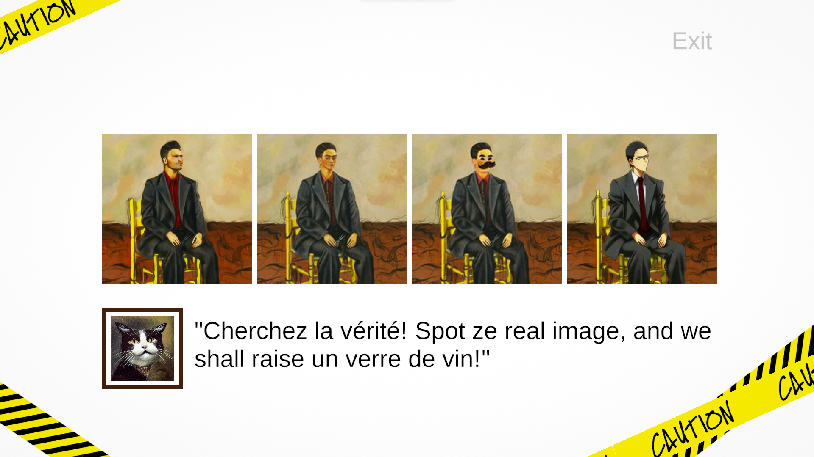
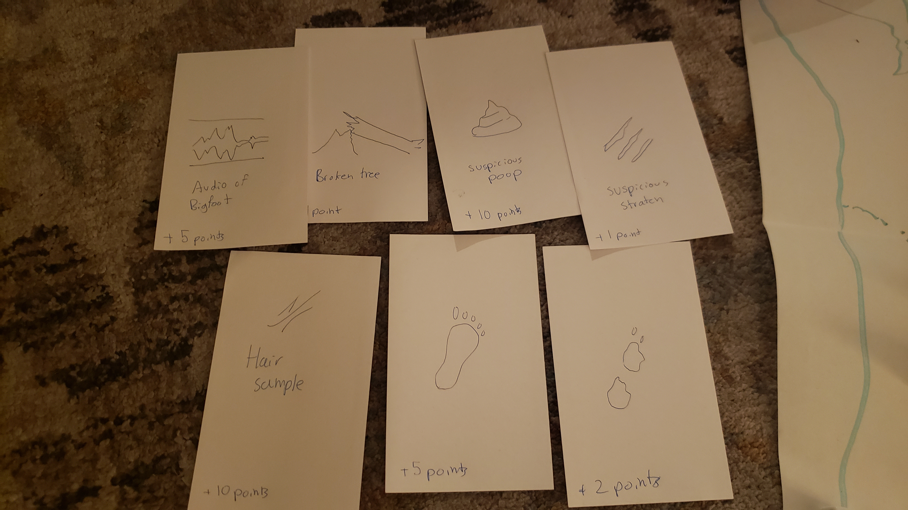
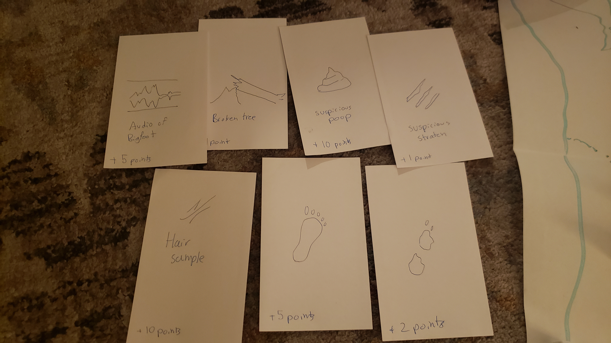
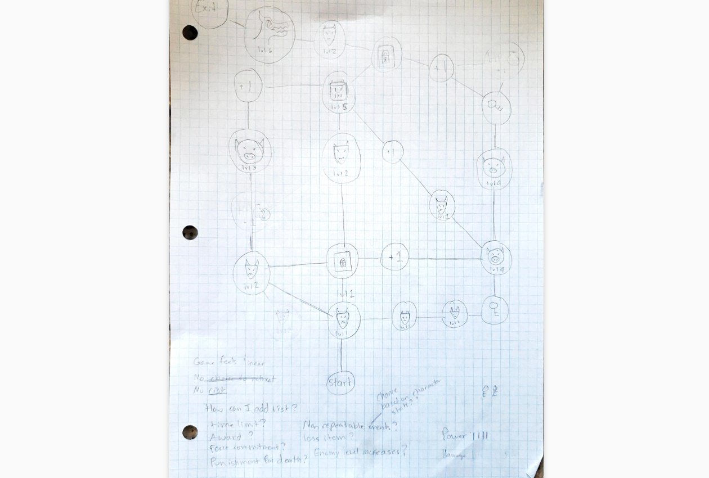

Game a Week 2023
This year, I decided to challenge myself by setting a goal to complete a new game every week. By the end, I hope that I am an more experienced game designer, who will have an improved intuition for fun gameplay and a faster ideation-to-finished-prototype cycle. Above all, I hope to brag some day that I made 100 games.
Mini Dune
Continuing with the theme of minifying, I decided to give one of my favorite games a shot. Dune (2019) is a conquest game based off of the scifi novel Dune. Rather than fighting to control 3 strongholds, players will be competing to capture one stronghold in the center of the map. The storm and spice blow mechanics are present but their affects are reduced to fit the smaller map size. Deployment and movement still works the same but each faction is limited to 3 units on the battlefield. Market cards return but were remade to fit the new gameplay. There is no traitor mechanic and factions no longer have unique abilities. The iconic battle system was replaced with dice rolling. All the components were able to fit inside a Nintendo DS case, making it a great portable version of the already fantastic base game.
Theme: Minify | Platform: Tabletop
  Mini Axis & Allies
I created a smaller version of Axis and Allies: 1941. There are multiple versions of this game, but this is the one that I own. I redesigned the game into a 1v2 game with simpler move mechanics and fewer units. Each nation only has 5 units with predetermined unit compositions. All units can move only one space and only one unit can be moved per turn. Units can't be stacked in the same territory like in the base game. Dice combat and unit counters remain the same. I limited the game to only land combat to reduce parts required to play and for simplicity. I removed the fighter but used its plastic model for the bomber since it was smaller. A player wins when they hold any of their opponent's capital tile for 2 turns. I played through three sessions during the last board game meetup and the game played well, with all players satisfied with each game, but noting some need for improvement.
Theme: Minify | Platform: Tabletop
 Fake Art Exposed!
This game was submitted for the Hugging Face AI game jam and features a series of quizzes where the player must spot the real painting from other AI generated duplicates.
Theme: Expand; AI Tools | Platform: Web
Hunt Bigfoot
I only worked on this game for no longer than 2 hours....To play this "game," place your bigfoot enthusiast in one of the hunting spots and roll the dice to see if you found any evidence. Yup that's it.
Theme: Bigfoot board game | Platform: Tabletop
 

Lightsaber ver. 2
I considered Lightsaber to be the best game I had made so far but there were some glaring issues in the design. During playtesting, special abilities cards could get stuck in a player's hand if their opponent's strength was too high. This created a state where the game could never end or would be unnecessarily prolonged. To solve this, I removed the special abilities from deck pool and made them persistent cards that can be called anytime. I had to alter some other rules so that attack focused deck isn't always countered by a blocked focused deck.
Theme: Rock-paper-scissors card game | Platform: Tabletop
Paper RPG ver. 2
Since the first paper RPG was a delight to make, I immediately made a second version, but with the aim of incorporating more complexity.
Theme: RGP | Platform: Tabletop
Paper RPG
After the release of Diablo 4, I though it would fun to design a simple game using RPG mechanics. I was inspired by Sorry (not to be confused with Sorry!), an open world rpg on a piece a paper. I restricted myself to only use one dice so it can be used as a character piece. The goal of the game is to defeat the dragon, the final enemy. Each enemy has armor, the number that the player must roll above, and damage, the amount of health that is reduced if the player's roll fails. The player travels on nodes; some contain enemies, others contain power tokens that add extra points to the player's roll or health potions that increase max HP.
Theme: RGP | Platform: Tabletop
Fantasy Blackjack
I started playing my Nintendo DS again and was playing Blackjack in SEGA Casino when I though it could be interesting to turn Blackjack into a fantasy combat game. I created a second deck that contains combat abilities that can be casted if certain suits were obtained. Instead of 4 suits, I reduced the game to 3 suits. Part of the reason why is that, in the process of designing this game, I deconstructed blackjack and was removing rules that I didn't think I needed. Although, I should bring back the fourth suit since I ended up reconstructing blackjack (It turns out that all the rules are there for a reason!). Sadly, when I went to play test my game, my friends found the game to be confusing and pointless. Perhaps I'll come back to this game in the future...
Theme: Blackjack | Platform: Tabletop
Lightsaber
I asked myself if I could recreate the thrilling lightsaber combat from Star Wars, particularly the duels from the prequels (though, just be clear, the original trilogy is the best). I figured a rock-paper-scissors mechanic would be best foundation for the rules, using attack, block, and force as actions. Each player places their card face down, like in Yomi, then reveals both players reveal their cards at same time. The player who lost must reduce their strength by 1 point. Strength is similar to the posture mechanic from Sekiro. If you're strength is low, then you can't defend against special abilities that will reduce your health. Special abilities can be played by spending your previous moves as points.
Theme: Jedi vs Sith Duel | Platform: Tabletop
Atom Driver
For Ludum Dare 53, I created a game with two friends about a delivery truck in the future. My main goal was to publish my first game in C, which I did accomplish. This was also my first Ludum Dare, which I did enjoy, even though I had to sacrifice my entire weekend to finish this game. Design wise, this game is not too special; there are 4 levels and you win the game by reaching the delivery destination.
Theme: Delivery | Platform: Web
Mana
My next game is called Mana, a dice battling game where you must generate mana points to cast spells. This took two weeks to create, only because I spent sometime trying to figure out how to print the cards. It's a easy game to learn, but I hesitate to play it with others because each player has to keep track of how much mana they have using pen and paper. That ended up being a bad design choice that I will avoid in the future.
Theme: Dice battle game | Platform: Tabletop
Age of Empires
I'm still sad no one wanted to make an age of empires game during the design workshop so I made one myself lol. It plays similar to magic, but you have to manage a limited number of workers, there are only 6 units, and combat relies on dice rolling. I used the same unit counter system that the game uses so it could a good learning resource. The economy side of the game is simplified but the juggling between eco and war production is still present.
Emotion: Like a King | Platform: Tabletop
Resident Evil
During the first day of the Game Design Workshop at GDC, I worked with a team to create a table top game based off of Resident Evil. We chose "Tension" as primary emotion and we broke down the game into important verbs such as "Reload," "Resist," "Avoid," and "Shoot." In the game, the player explores a series of rooms that are filled with zombies, and potentially, useful items like health packs or ammo. The player needs to find the key to a secret laboratory and escape with a RNA sample. After 10 turns, Nemesis appears who is a invincible zombie that will chase you until you die or successfully escape.
Emotion: Tension | Platform: Tabletop
Runner
Scrolling became an interest for me so I decided to develop my own solution. Since I never programmed scrolling behavior before, I chose to create an endless runner because the gameplay is simple. The player onlys needs to press one button to jump over hurdles. There are coins that speed up the player when collected. Hitting a hurdle slows down the player, but in retrospect, I would rather make the player restart the level. I would become very irritated whenever I was slowed down and that is an emotion I want to avoid in my games. Also the player eventually becomes so fast that the hurdles become pointless. I thought about including a double jump collectable that was difficult to obtain to add a risk and reward element to the game, but I never got around to that.
Theme: Scrolling | Platform: Playdate
AirStrike
I was inspired by a crazy hailstorm that I saw outside my window to make a game about falling. I thought about making a nature game where you play as a cloud and you drop rain droplets on to the ground. I didn't how to challenge the player so I swapped the nature theme with war. The cloud became a plane that dropped bombs and below were anti-air guns that shot back. My original idea used a scrolling level, but since I wasn't sure how to do that, I kept the game within the bounds of the screen. This ended being a difficult limitation when deciding what the goal of the game should be. Eventually I ran out of time and the goal became kill all the anti-air guns in the level.
Theme: Falling | Platform: Playdate
Asteroids
This week I made an asteroids game. My challenge was to use the crank as a primary input, so I used it for rotation. I tied movement to shooting to make the game easier to play with the crank. Sadly I wasn't able fully flesh out the idea in time, as development took longer than expected and I waited until the end to solve design issues
Theme: Crank To Turn | Platform: Playdate

Circle
Circle is a pattern creation tool. Users can use the crank on their Playdate to control the radius of a circle. Once they confirm their radius size, the can draw more smaller circles until they run out of action points. The goal is to create an interest pattern using only circles and a limited amount of points. There is no challenge in pursuing the goal so I don't consider this to be a game, but it was fun first project for the Playdate console.
Theme: Pattern | Platform: Playdate